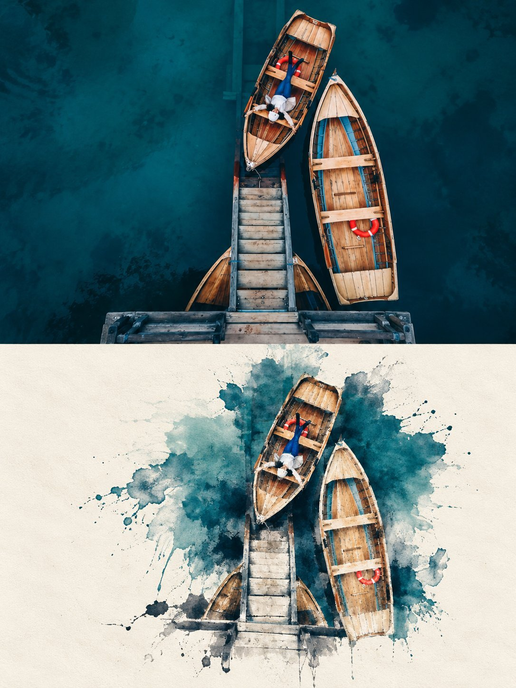
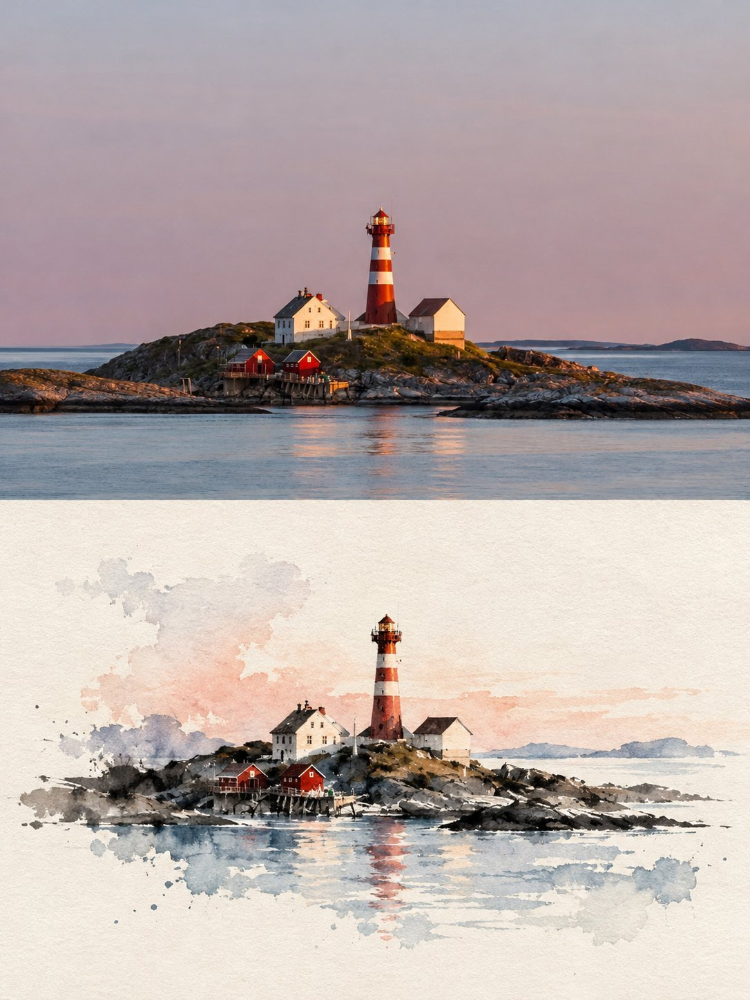
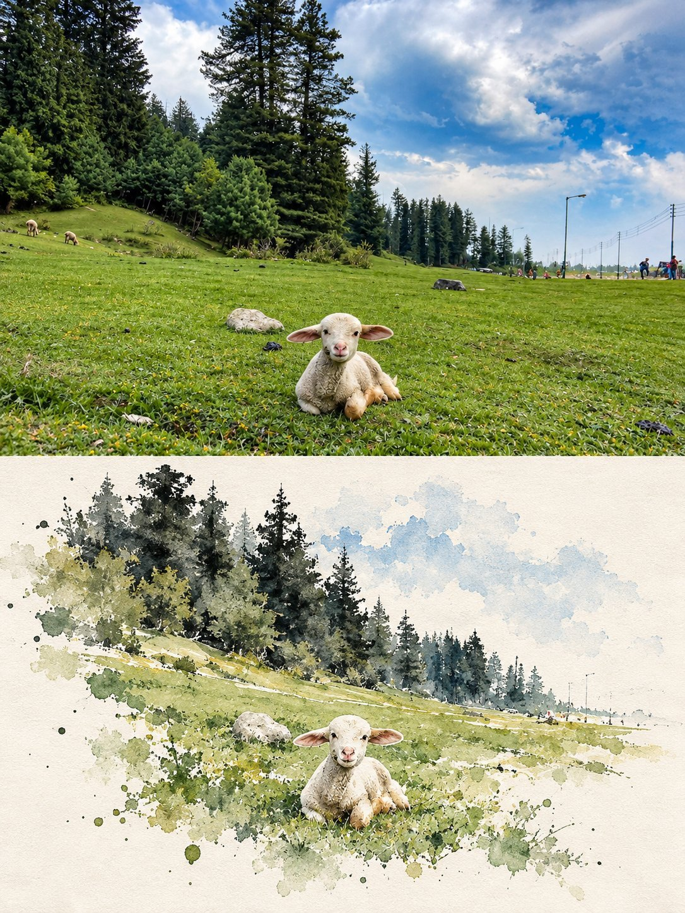

照片转水彩
上半为原照片，下半转为水彩速写，留白和颜料晕染很自然。作者公开完整提示词。
| 作者 | Ziha @Ziha_ai |
|---|---|
| 平台 | X |
| 模型 | GPT Image 2.5 |
| 点赞 | 259 |
| 发布 | 2026-10-11 |
| 画风 | 水彩绘本 |
| 地域氛围 | 欧洲 |
| 题材 | 旅行城市 |
| 情绪 | 温暖治愈 |
提示词 · 来自正文
The image is in a 3:4 vertical composition, divided into two regions, with a strict 1:1 ratio, each taking up 50% of the image. Upper Region - Original Photo Shoot Area Preserves the subject's identity, structure, perspective, and true material, natural light, and original color atmosphere, with only slight high-end color grading and image purification, presenting it with the texture of art magazines or exhibition photography. It allows for a moderate expansion of the background to fit the screen size, but does not stretch, distort, or reshape the subject, without changing the subject's structure, posture, and core composition. Lower Region - Minimalist Ink Wash Reconstruction Area First, refine the subject with the most memorable details, such as the outline, structure, trend, perspective, rhythm, and atmosphere, and then reconstruct the same scene into a minimalist ink wash material landscape. Do not copy the photo details, do not make a realistic copy, only preserve the most recognizable structure and charm, allowing people to recognize the corresponding relationship between the upper region and the original photo at first glance. The overall base of the lower half is milky white, warm white or paper white, with delicate paper fiber and natural texture. The main body is reconstructed in ink wash blending, dry-wet interplay, flying white, seepage, ink accumulation, and white space, forming a quiet, restrained, and poetic Eastern visual. Removing secondary details, only retaining the most distinctive contours, structural turns, spatial layers, and breath, not pursuing realistic completeness, but rather summarizing, refining, and leaving a lingering impression. The use of ink in black, gray, and light ink tones, layered and progressing, with varying intensities and rhythms. The most vibrant colors can be extracted from the original image to create a few spots of dyeing or coloring, without mechanically replicating the color values. The colors can be transformed locally into clear blue-gray, distant blue, soft gold, warm yellow, vermilion red, light cyan, etc., to emphasize the main focus and emotional rhythm, but the overall composition is still dominated by ink tones and negative space. Avoiding dull, heavy, old brown, excessive decoration, and vulgar color combinations. The main core areas should be more refined and concentrated, with edges gradually loosening, breaking away, disappearing, and scattering, forming a sense of breathing with the large negative space. The lower half of the composition should account for about 30%-45%, with the rest reserved for large negative spaces. The composition can be biased, framed, suspended, or slightly cut, but must maintain an asymmetrical balance and a high-end editorial feel. Negative space is not blank, but an important component of the visual structure. It is better to reduce information than to fill the entire image, so that the main focus looks like an ink seal or an oriental material work displayed on a page. Text Treatment Text is only allowed a very small amount of editing intervention, without preset titles and numbers. A small number of words or short sentences can be extracted from the subject, location, time, action, emotion, or metaphor, and quietly placed in the blank area or the edge of the subject. The text should be restrained, sparse, and have a sense of breathing, not noisy or dominant. Overall Presentation Contemporary Eastern aesthetics, minimalist ink wash reconstruction, large-scale art blank, small-scale seal impression, quiet editing layout and exhibition poster style. Avoid complex backgrounds, piled-up real details, overly decorative, excessive text, template layout and filled composition